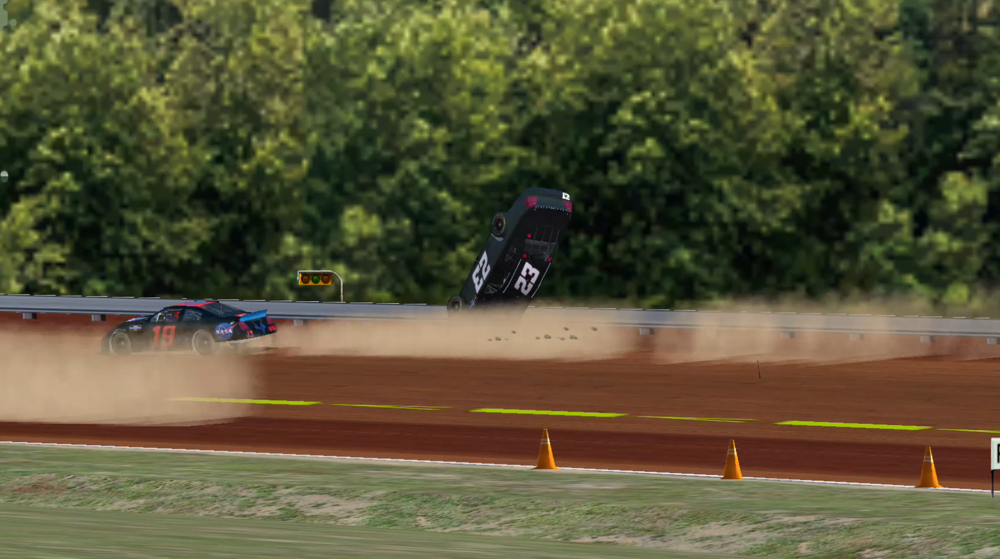
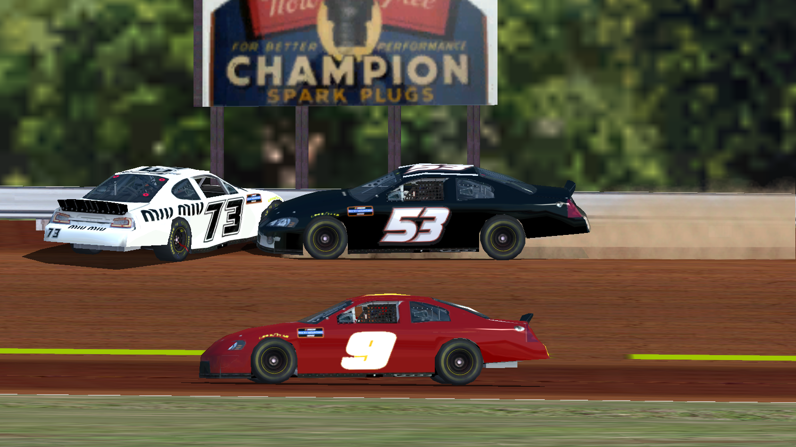

Drivers Heated After Heat Race
 Gavin Thiel (#23) flipping down the backstretch with Caeden Cataldo (#19) recovering after getting put in the fenceSome drivers have been making enemies before the season has even began, in Heat 3 and 4 for the Langhorne Exhibition, two drivers each wrecked another driver after the races. In Heat 3, Gavin Thiel was displeased with how Caeden Cataldo raced him, so after race end he put him into the wall but sent his own car flipping. In a similar event, after the race end of Heat 4 for the Langhorne Exhibition event, Fayth Christensen showed her displeasure with fellow driver Grace Tsai, who retaliated and put them both into the wall.
 Grace Tsai (#73) and Fayth Christensen (#53) in the fenceNASCAR has decided to suspend Christensen, Thiel, and Tsai from participating in the Langhorne event, allowing Tayla Mendenhall, Sam Turner, and Dek Trimble who originally finished outside the top 5 and did not qualify for the main event, to participate in the race.